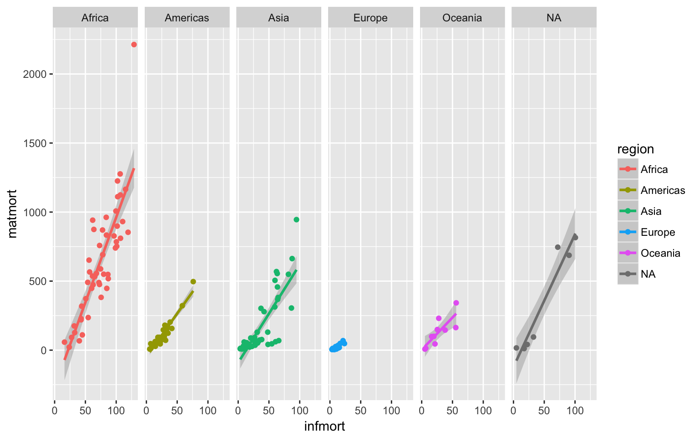

left_join()right_join()inner_join()outer_join()bind_rows()bind_cols()semi_join()anti_join()intersect()union()setdiff()# libraries needed for these graphs
library(tidyverse)
library(readxl)These data and cleaning code are from Data cleaning
ccodes <- read_csv("https://raw.githubusercontent.com/lukes/ISO-3166-Countries-with-Regional-Codes/master/all/all.csv")
infmort <- read_csv("data/infmort.csv") %>%
separate(3, c(c("rate", "ci_low", "ci_hi")), sep = "(\\[|-)|]") %>%
mutate(
rate = as.numeric(rate),
ci_low = as.numeric(ci_low),
ci_hi = as.numeric(ci_hi)
)
matmort <- read_xls("data/matmort.xls") %>%
gather("Year", "stats", `1990`:`2015`) %>%
mutate(stats = gsub(" ", "", stats)) %>%
separate(stats, c("rate", "ci_low", "ci_hi")) %>%
mutate(
Year = as.integer(Year),
rate = as.numeric(rate),
ci_low = as.numeric(ci_low),
ci_hi = as.numeric(ci_hi)
)inner_join(data1, data2, by = c(“col1”, “col2”))
Use an inner_join() if you only want matching data between two tables and want to exclude any data from either table that doesn’t have a match in the other table.
inf.mat.mort <- inner_join(matmort, infmort, by = c("Country", "Year"))
inf.mat.mort[1:5, ]## # A tibble: 5 x 8
## Country Year rate.x ci_low.x ci_hi.x rate.y ci_low.y ci_hi.y
## <chr> <int> <dbl> <dbl> <dbl> <dbl> <dbl> <dbl>
## 1 Afghanistan 1990 1340 878 1950 122.5 111.6 135.5
## 2 Albania 1990 71 58 88 35.1 31.3 39.2
## 3 Algeria 1990 216 141 327 39.7 37.1 42.3
## 4 Angola 1990 1160 627 2020 133.5 119.9 151.0
## 5 Argentina 1990 72 64 80 24.4 24.0 24.9Maybe we shouldn’t have given the rates and CIs the same names in the infant and maternal mortality tables if we were going to join them. That’s easily fixed.
infmort <- read_csv("data/infmort.csv") %>%
separate(3, c(c("infmort_rate", "infmort_ci_low", "infmort_ci_hi")), sep = "(\\[|-)|]") %>%
mutate(
infmort_rate = as.numeric(infmort_rate),
infmort_ci_low = as.numeric(infmort_ci_low),
infmort_ci_hi = as.numeric(infmort_ci_hi)
)
matmort <- read_xls("data/matmort.xls") %>%
gather("Year", "stats", `1990`:`2015`) %>%
mutate(stats = gsub(" ", "", stats)) %>%
separate(stats, c("matmort_rate", "matmort_ci_low", "matmort_ci_hi")) %>%
mutate(
Year = as.integer(Year),
matmort_rate = as.numeric(matmort_rate),
matmort_ci_low = as.numeric(matmort_ci_low),
matmort_ci_hi = as.numeric(matmort_ci_hi)
)
inf.mat.mort <- inner_join(matmort, infmort, by = c("Country", "Year"))
inf.mat.mort[1:5, ]## # A tibble: 5 x 8
## Country Year matmort_rate matmort_ci_low matmort_ci_hi infmort_rate
## <chr> <int> <dbl> <dbl> <dbl> <dbl>
## 1 Afghanistan 1990 1340 878 1950 122.5
## 2 Albania 1990 71 58 88 35.1
## 3 Algeria 1990 216 141 327 39.7
## 4 Angola 1990 1160 627 2020 133.5
## 5 Argentina 1990 72 64 80 24.4
## # ... with 2 more variables: infmort_ci_low <dbl>, infmort_ci_hi <dbl>left_join(main.data, optional.data, by = c("main.col" = "opt.col")
Use a left_join() if you want to keep all the data in the main (left) table and join data from another (right) table if it exists.
inf.mat.mort.region <- inf.mat.mort %>%
left_join(ccodes, by = c("Country" = "name"))
inf.mat.mort.region[1:5, ]## # A tibble: 5 x 16
## Country Year matmort_rate matmort_ci_low matmort_ci_hi infmort_rate
## <chr> <int> <dbl> <dbl> <dbl> <dbl>
## 1 Afghanistan 1990 1340 878 1950 122.5
## 2 Albania 1990 71 58 88 35.1
## 3 Algeria 1990 216 141 327 39.7
## 4 Angola 1990 1160 627 2020 133.5
## 5 Argentina 1990 72 64 80 24.4
## # ... with 10 more variables: infmort_ci_low <dbl>, infmort_ci_hi <dbl>,
## # `alpha-2` <chr>, `alpha-3` <chr>, `country-code` <chr>,
## # `iso_3166-2` <chr>, region <chr>, `sub-region` <chr>,
## # `region-code` <chr>, `sub-region-code` <chr>right_join(optional.data, main.data, by = c("opt.col" = "main.col")
We really just wanted the region, not all the extra data from the country codes. We can just select the columns we want when we load the country codes data. If we start with the ccodes table, we can right_join() the inf.mat.mort table, which is just the opposite of a left join (keeps all the data from the “right” joined table and any data from the “left” table that matches). Remember to switch the order of the by columns if they have different names in the main and optional data tables.
inf.mat.mort.region <- read_csv("https://raw.githubusercontent.com/lukes/ISO-3166-Countries-with-Regional-Codes/master/all/all.csv") %>%
select(name, region) %>%
right_join(inf.mat.mort, by = c("name" = "Country"))
inf.mat.mort.region[1:5, ]## # A tibble: 5 x 9
## name region Year matmort_rate matmort_ci_low matmort_ci_hi
## <chr> <chr> <int> <dbl> <dbl> <dbl>
## 1 Afghanistan Asia 1990 1340 878 1950
## 2 Albania Europe 1990 71 58 88
## 3 Algeria Africa 1990 216 141 327
## 4 Angola Africa 1990 1160 627 2020
## 5 Argentina Americas 1990 72 64 80
## # ... with 3 more variables: infmort_rate <dbl>, infmort_ci_low <dbl>,
## # infmort_ci_hi <dbl>So let’s make a graph that we couldn’t have easily made with 3 separate data tables
inf.mat.mort.region %>%
group_by(name, region) %>%
summarise(
matmort = mean(matmort_rate),
infmort = mean(infmort_rate)
) %>%
ggplot(aes(infmort, matmort, colour = region)) +
geom_smooth(method = "lm") +
geom_point() +
facet_grid(.~region)